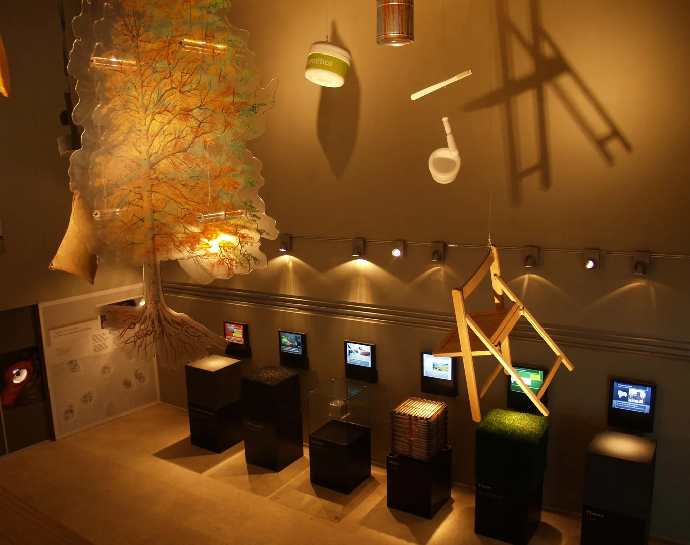

Cultura y museografía
Ars Natura
GICAMAN · Cuenca · 2009
Mi aportación. Dirección de Optimus · proyecto museográfico

01
Contexto
Un centro de interpretación de la naturaleza, el clima y el medio ambiente.
02
Necesidad
Relacionar escalas locales y globales y facilitar diferentes niveles de interpretación.
03
Estrategia
Desde la dirección de Optimus coordiné el marco de trabajo de un equipo que integró guiones, diseño, audiovisuales e ingeniería. El relato se apoyó en interactividad y recursos de interpretación para públicos diversos.
04
Impacto
El proyecto se concretó en la museografía del centro, con instalaciones audiovisuales y recursos participativos.

Créditos y alcance
Cliente: GICAMAN. Diseño y realización museográfica: equipo de Optimus Medina Riley.
¿Qué tienes entre manos?
Podemos empezar por una necesidad concreta o por una idea que aún necesita forma.